El comportamiento colectivo es uno de los fenómenos más interesantes dentro del estudio de los sistemas complejos. En numerosos sistemas naturales podemos observar grupos de individuos que, a pesar de no contar con una estructura central de organización, logran desarrollar patrones de movimiento coordinados. Algunos ejemplos son las bandadas de aves, los bancos de peces y los enjambres de insectos. Estos comportamientos plantean una pregunta importante: ¿cómo puede surgir una organización global a partir de interacciones individuales relativamente sencillas?
Para explorar este fenómeno, en este proyecto implementamos el modelo de Boids, propuesto por Craig Reynolds en 1987. Este modelo permite simular el movimiento colectivo de una población de agentes autónomos mediante un conjunto reducido de reglas locales. Cada agente toma decisiones a partir de la información de sus vecinos cercanos, sin recibir instrucciones de un líder o coordinador central.
El modelo considera una población de agentes que se desplazan en un espacio bidimensional. Cada agente está caracterizado por una posición y una velocidad, ambas representadas mediante vectores de dos componentes: \(x_i=(x_i^{(1)},x_i^{(2)}),\) \(v_i=(v_i^{(1)},v_i^{(2)}).\)
La interacción entre los agentes está determinada por un radio de percepción (R). Para cada agente (i), únicamente se consideran vecinos aquellos agentes (j) cuya distancia satisface: \(0<|x_j-x_i|< R\)
De esta manera, cada individuo toma decisiones utilizando información local, sin necesidad de conocer el estado completo del sistema.
Inicialización de los agentes
Para comenzar la simulación se estableció una población de 50 agentes, distribuidos aleatoriamente dentro de una región cuadrada de dimensiones \(100\times100\). A cada agente se le asignó una velocidad inicial aleatoria, posteriormente normalizada para que todos comenzaran con la misma rapidez.
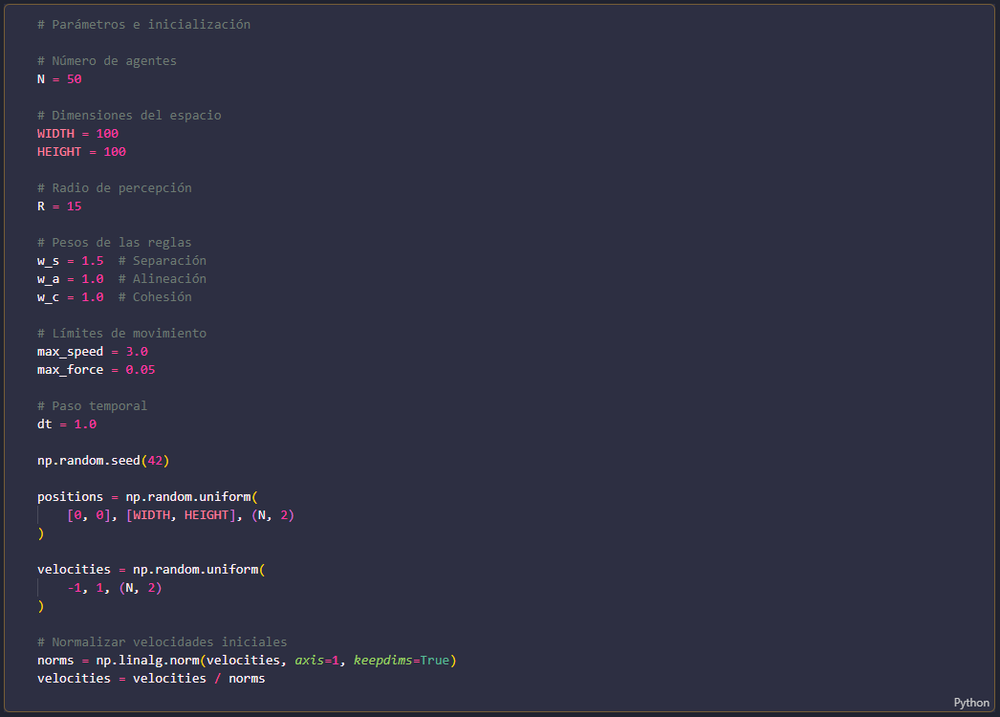
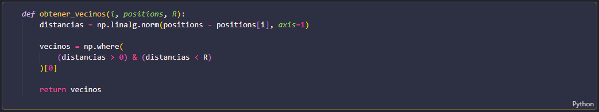
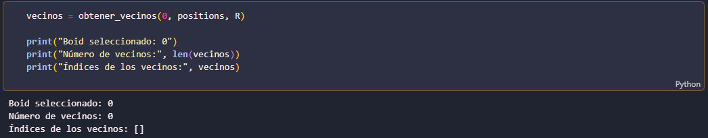
Reglas de interacción
El movimiento de cada agente está determinado por tres reglas fundamentales: separación, alineación y cohesión. Estas reglas representan diferentes aspectos del comportamiento colectivo y actúan simultáneamente sobre cada individuo.
Separación: Esta regla busca evitar que los agentes se aproximen demasiado entre sí. Para conseguirlo, cada agente experimenta una fuerza de repulsión respecto a sus vecinos. La intensidad de esta interacción depende inversamente del cuadrado de la distancia: \(s_i=\sum_{j\in N_i} \frac{x_i-x_j}{|x_i-x_j|^2}.\)
Los vecinos más próximos producen una mayor influencia sobre el movimiento del agente.
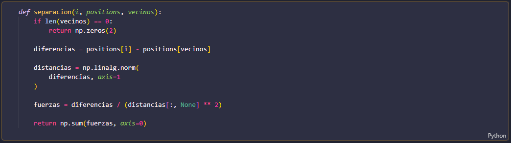
Alineación:Esta regla permite que cada agente ajuste su velocidad de acuerdo con la velocidad promedio de sus vecinos. Su expresión es: \(a_i=\frac{1}{|N_i|} \sum_{j\in N_i}v_j-v_i.\)
El objetivo es favorecer que los agentes tiendan a desplazarse en direcciones similares.
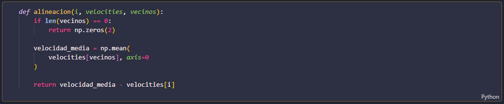
Cohesión:Esta regla dirige a cada agente hacia el centro de posición de sus vecinos: \(c_i=\frac{1}{|N_i|} \sum_{j\in N_i}x_j-x_i.\)
Su función es favorecer que los individuos permanezcan próximos y que la población no se disperse completamente.
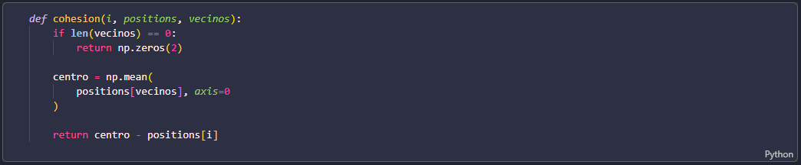
Las tres reglas actúan simultáneamente y su influencia está determinada por distintos pesos. La aceleración resultante de cada agente se calcula mediante: \(\Delta v_i=w_s s_i+w_a a_i+w_c c_i.\) Los parámetros \((w_s)\), \((w_a)\) y \((w_c)\) determinan la importancia relativa de la separación, la alineación y la cohesión, respectivamente.
Para evitar cambios excesivamente bruscos en el movimiento, se establecieron límites tanto para la magnitud de la aceleración como para la rapidez máxima de los agentes. Esto permite mantener una dinámica más estable y evitar que las velocidades crezcan indefinidamente.
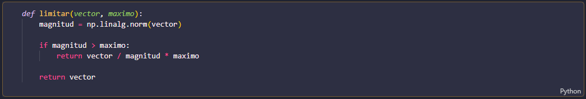
Dinámica y simulación
Una vez definidas las reglas de interacción, se construyó la función encargada de actualizar el estado del sistema en cada iteración.
La actualización se realiza en dos etapas. Primero se modifica la velocidad de cada agente utilizando la aceleración resultante y posteriormente se actualiza su posición mediante: \(v_i(t+\Delta t)=v_i(t)+\Delta v_i\Delta t,\) \(x_i(t+\Delta t)=x_i(t)+v_i(t+\Delta t)\Delta t.\)
Un aspecto importante de la implementación consiste en utilizar copias de las posiciones y velocidades correspondientes al estado anterior. Esto permite que todos los agentes calculen sus nuevas condiciones utilizando la misma información temporal, evitando que el orden de actualización afecte artificialmente la dinámica del sistema.
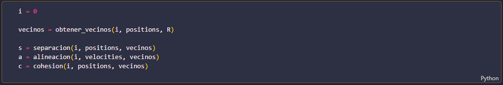
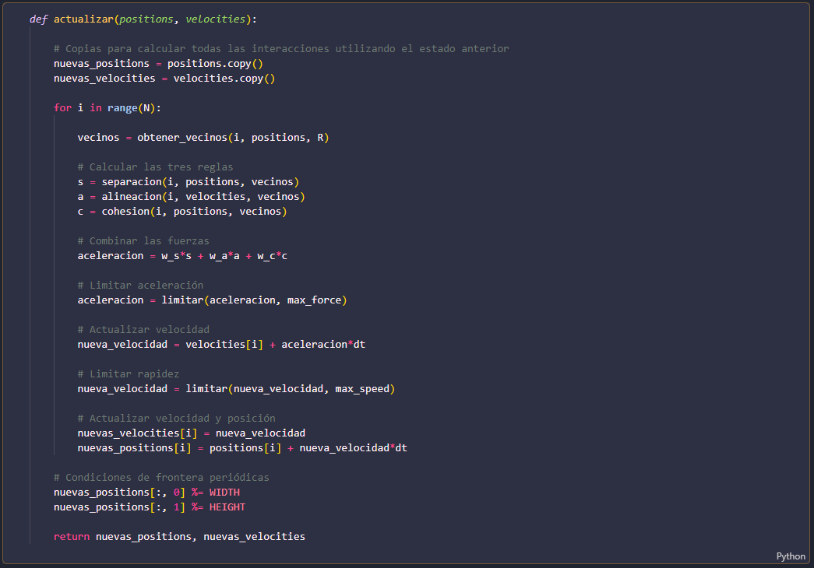
Para observar la evolución del sistema se realizaron 200 iteraciones, almacenando las posiciones de todos los agentes en cada instante temporal. Esto permitió conservar un historial completo de la simulación y utilizarlo posteriormente para construir representaciones gráficas y animaciones.
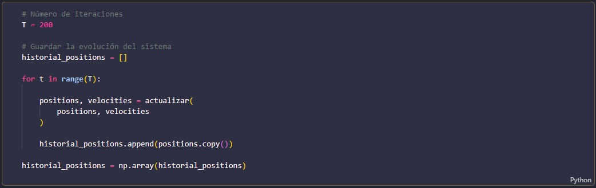
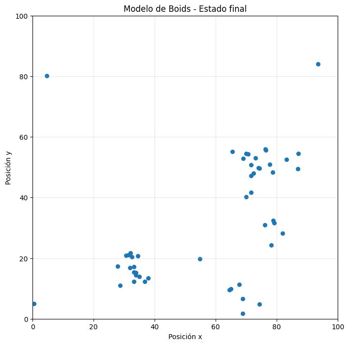
A partir de las posiciones finales se obtuvo una representación de la distribución espacial de los agentes. Sin embargo, una imagen estática no permite apreciar completamente la evolución del comportamiento colectivo, por lo que también se construyó una animación que muestra el movimiento de los agentes a lo largo del tiempo.
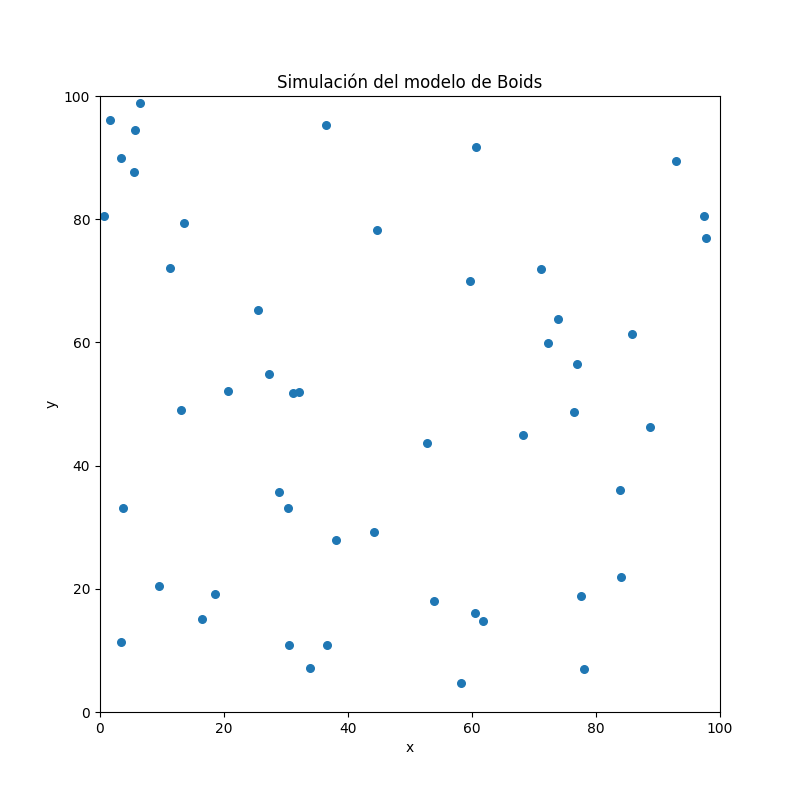
Influecia del radio de percepción
En el primer experimento se estudió cómo cambia la dinámica del sistema al modificar el radio de percepción de los agentes. Se consideraron tres valores: \((R=5)\), \((R=15)\) y \((R=30)\), manteniendo constantes las demás condiciones.
El propósito de esta comparación es analizar cómo la cantidad de vecinos que puede percibir cada agente influye en la organización de la población. Un radio pequeño restringe las interacciones a una región más cercana, mientras que un radio mayor permite establecer interacciones con una cantidad más amplia de individuos.
Para complementar la observación visual, se calculó el número promedio de vecinos de cada agente y la polarización del sistema. Esta última medida permite cuantificar el grado de alineación global de las velocidades: \(P(t)=\left| \frac{1}{N}\sum_{i=1}^{N} \frac{v_i(t)}{|v_i(t)|} \right|.\)
La polarización toma valores entre cero y uno. Los valores cercanos a uno representan un movimiento altamente coordinado, mientras que los valores cercanos a cero indican una menor alineación colectiva.
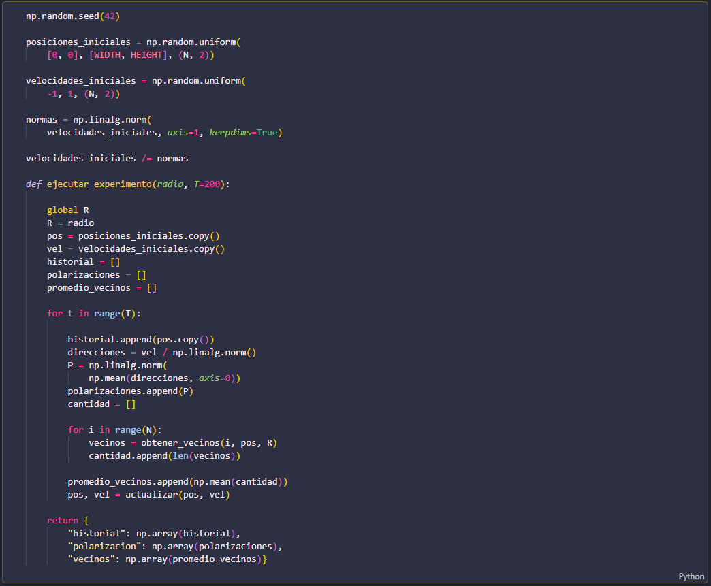
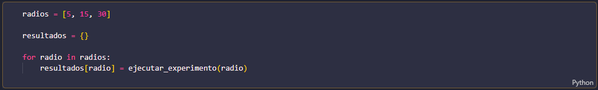
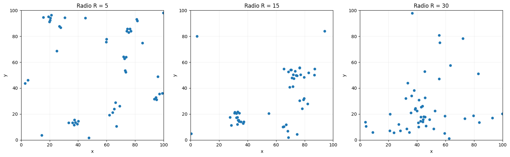
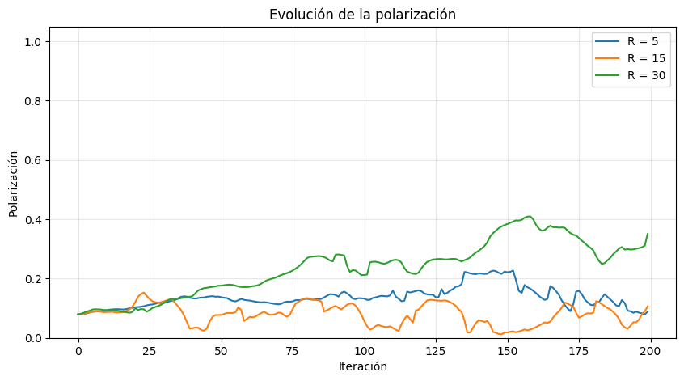
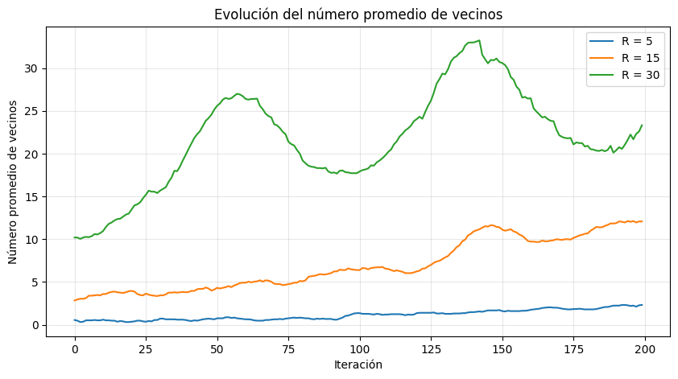
Influencia de los pesos de interacción
En el segundo experimento se investigó la influencia relativa de las tres reglas mediante la modificación de sus pesos. Se consideraron tres configuraciones. En la primera se utilizaron pesos equilibrados; en la segunda se incrementó la importancia de la separación y se redujeron los pesos de alineación y cohesión; finalmente, en la tercera se favorecieron las reglas de alineación y cohesión respecto a la separación.
Las configuraciones utilizadas fueron:
| Configuración | Separación | Alineación | Cohesión |
|---|---|---|---|
| A | 1.5 | 1.0 | 1.0 |
| B | 3.0 | 0.5 | 0.5 |
| C | 0.5 | 2.0 | 2.0 |
Esta comparación permite estudiar cómo cambia la distribución espacial de los agentes cuando se modifica la importancia relativa de evitar colisiones, coordinar velocidades y mantener la proximidad entre individuos.
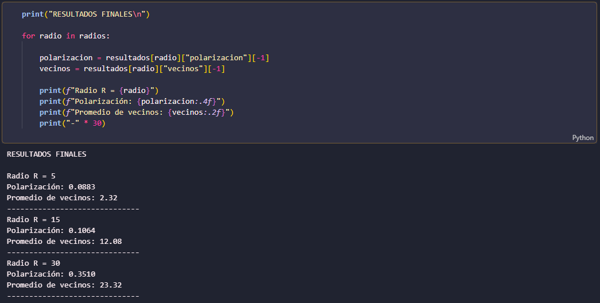
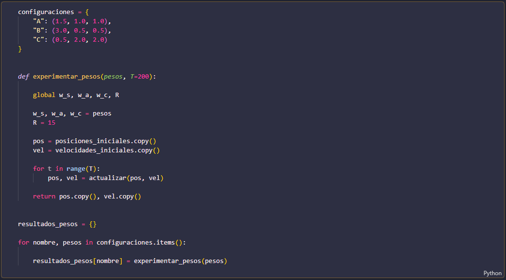
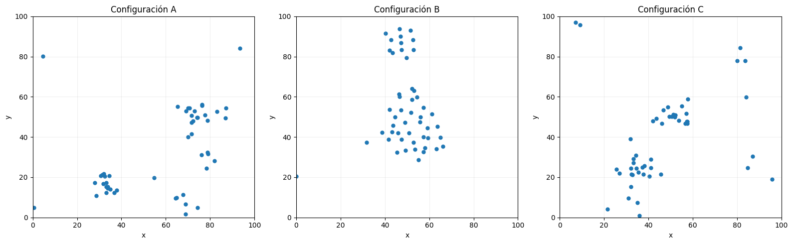
Los resultados visuales permiten comparar las configuraciones obtenidas y estudiar las diferencias en la distribución de los agentes. La interpretación de estas diferencias debe considerar que cada regla tiene una función distinta dentro de la dinámica del sistema.
Conclusiones
La implementación del modelo de Boids permite observar cómo un conjunto de reglas individuales relativamente sencillas puede producir comportamientos colectivos complejos. Ningún agente dispone de información sobre el comportamiento de toda la población ni existe un mecanismo central encargado de coordinar el movimiento. A pesar de ello, las interacciones locales pueden generar patrones de organización y desplazamiento conjunto.
Los experimentos realizados permiten explorar la influencia del radio de percepción y de los pesos asociados a las reglas de interacción. Esto muestra que el comportamiento global del sistema depende de las características de las interacciones individuales y de la manera en que estas se combinan.
Desde la perspectiva de los sistemas complejos, el modelo constituye un ejemplo de emergencia y autoorganización: las propiedades colectivas no están determinadas por un agente particular, sino que aparecen como consecuencia de las interacciones entre los componentes del sistema.
Finalmente, este proyecto permite reconocer que reglas locales sencillas pueden ser suficientes para reproducir algunos aspectos del comportamiento colectivo observado en sistemas naturales, lo que convierte al modelo de Boids en una herramienta útil para estudiar la relación entre dinámica individual y organización global.